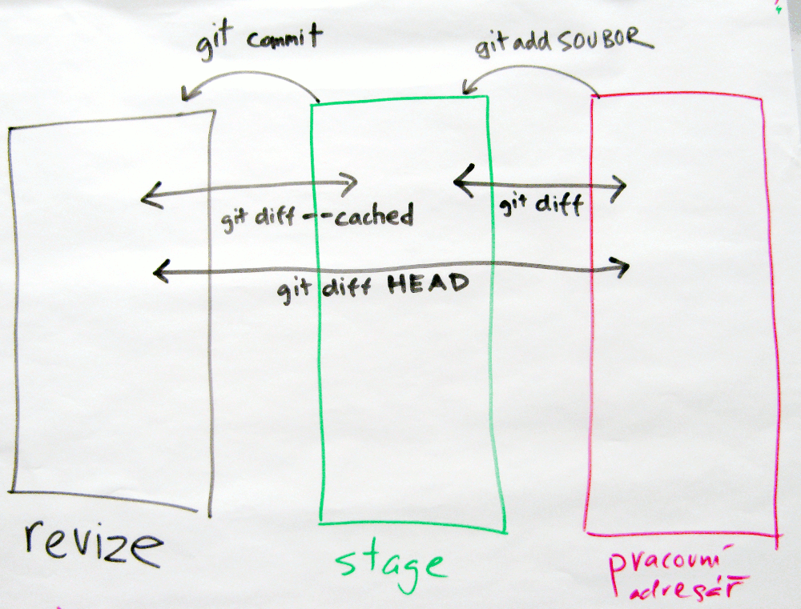

PyLadies Brno
Git

Nezapomeň:
$ na začátku se nepíše;
je tu proto, aby šlo poznat že jde o příkaz.
Instalace
Repozitář
cd).
Pak vytvoř gitový repozitář (angl. repository)
pomocí příkazu git init:
$ git init Initialized empty Git repository in /tmp/tepo/.git/Na první pohled to vypadá že se nic nestalo. Tenhle příkaz totiž vytvořil skrytý adresář
.git, do kterého uložil nějaké informace.
Přesvědč se příkazem ls -a (Linux) nebo
dir /a (Windows).
Adresář .git je schovaný proto, že
ho spravuje Git a my bychom v něm neměly nic měnit.
git status, který
vypisuje informace o stavu repozitáře:
$ git status On branch master Initial commit nothing to commit (create/copy files and use "git add" to track)„On branch master” říká něco o větvích, k tomu se vrátíme později. „Initial commit” říká, že zatím nemáme uloženou žádnou verzi. A „nothing to commit” říká, že je adresář prázdný – nejsou tu žádné soubory u verzování.
První revize
Teď si zkusme do Gitu něco přidat!
basnicka.txt a napiš do něj
nějakou básničku.
Měla by mít aspoň pět řádků, ať pak máme s čím pracovat.
Pak zkus znovu git status: Git oznámí,
že v adresáři je soubor, o kterém ještě „neví“.
$ git status
On branch master
Initial commit
Untracked files:
(use "git add <file>..." to include in what will be committed)
basnicka.txt
nothing added to commit but untracked files present (use "git add" to track)
U každého nového souboru musíme Gitu říct, že
chceme jeho obsah sledovat.
Proveď to se svojí básničkou:
$ git add basnicka.txta znovu zkontroluj stav repozitáře:
$ git status On branch master Initial commit Changes to be committed: (use "git rm --cachedTo, co je zelené („changes to be committed“), se přidá do další revize (angl. commit), kterou vytvoříš. Pojď tedy vytvořit revizi:..." to unstage) new file: basnicka.txt
$ git commitPo zadání tohoto příkazu se otevře editor, do kterého musíš napsat nějaký popisek, abys věděla, co tahle revize obsahuje za změny. Pro začátek napiš jen
První revize.
Předvyplněné řádky začínající # nech být
(nebo vymaž, podle chuti – Git je ignoruje).
Pak soubor ulož, a zavři editor.
Na Windows, máš-li správně nastavený Git, se použije Poznámkový blok (Notepad) – stačí něco napsat, uložit (Ctrl+S) a zavřít (Alt+F4).
Na Linuxu a Mac OS X se objeví editor v příkazové řádce, který se jmenuje Nano. Pozná se tak, že v dolních dvou řádcích má malou nápovědu. Něco napiš, pomocí Ctrl+O soubor ulož, potvrď jméno souboru (Enter), a pomocí Ctrl+X editor zavři.
Nemáš-li Git nastavený podle instrukcí, objeví se přímo
v příkazové řádce Vim – poměrně složitý editor, který
se teď učit nebudeme. Pozná se tak, že úplně
spodní řádek je prázdný.
V takovém případě stiskni
Esc, napiš :q! (dvojtečka, Q, vykřičník),
a potvrď pomocí Enter.
Pak si nastav Git a zkus git commit znovu.
$ git status On branch master nothing to commit, working directory cleanTenhle krátký výstup znamená, že od poslední revize se nic nezměnilo. Což dává smysl – poslední revizi jsi právě vytvořila!
git show:
$ git show commit e0419fedda0a85a945a05a31bd58c5196c8d3b1d Author: Adéla Novotná <adela.novotna@example.cz> Date: Sun Jan 18 23:41:31 2015 +0100 První revize diff --git a/basnicka.txt b/basnicka.txt new file mode 100644 index 0000000..8416aea --- /dev/null +++ b/basnicka.txt @@ -0,0 +1,11 @@ +Haló haló +co se stalo? +Kolo se mi polámalo + +Jaké kolo? +Favoritka, +přeletěl jsem přes řidítka + +Co jste dělal? +Blbnul jsem, +do příkopy zahnul jsemVidíš unikátní označení revize, pomocí kterého se vždy bude dát dostat k této konkrétní verzi projektu. Pak je tam jméno autorky a datum vytvoření, popisek, a nakonec shrnutí změn: byl přidán soubor basnicka.txt s nějakým obsahem.
help()).
Druhá revize
$ git status
On branch master
Changes not staged for commit:
(use "git add <file>..." to update what will be committed)
(use "git checkout -- <file>..." to discard changes in working directory)
modified: basnicka.txt
no changes added to commit (use "git add" and/or "git commit -a")
Soubor je opět červený! Něco se v něm změnilo!
Ale co?
Na to nám odpoví příkaz git diff.
$ git diff diff --git a/basnicka.txt b/basnicka.txt index 8416aea..333757f 100644 --- a/basnicka.txt +++ b/basnicka.txt @@ -3,8 +3,7 @@ co se stalo? Kolo se mi polámalo Jaké kolo? -Favoritka, -přeletěl jsem přes řidítka +Favoritka! Přeletěl jsem přes řidítka! Co jste dělal? Blbnul jsem,Změny se ukazují po řádcích. Červeně, s -, jsou ukázány odebrané řádky; zeleně s + řádky přidané.
git diff –
v jedné ze změn musí být chyba!
$ git add basnicka.txtA pro úplnost se znovu koukni co říká
status – co je zelené, přidá se do další
revize.
$ git status On branch master Changes to be committed: (use "git reset HEADNež uděláš druhou revizi, ještě řeknu něco o tom, jak správně psát k revizím popisky. Na to je totiž úzus, který téměř všichni programátoři respektují: na prvním řádku je krátké shrnutí změn, následuje prázdný řádek, a pak detailnější popis důvodů ke změně a případně změny samotné. Snaž se délku řádků držet do zhruba 70 znaků; vodítkem můžou být předvyplněné řádky začínající..." to unstage) modified: basnicka.txt
#.
Nemá cenu popisovat co je jasné ze změn samotných,
zajímavé jsou hlavně širší souvislosti a důvody
ke změnám.
Cokoli, co může přijít vhod až se změny bude snažit
někdo pochopit.
(Ten někdo můžeš být klidně ty, za pár měsíců.)
Můj popisek bude znít takhle:
Druhá sloka: Sloučení posledních dvou řádků Sloučení řádků rozbíjí monotónnost formy básně – nestejný počet veršů ve sloce je prý moderní. (Ale, co si budeme povídat, hlavní důvod je líp ukázat co dělá `git diff`.) Použití vykřičníku místo čárky zdůrazňuje naléhavost situace.
git commit vytvoř druhou revizi.
Pak ji zkontroluj:
$ git show commit 207f72f43d4a45a0ecb477f74d9f83bf7ddb3200 Author: Adéla Novotná <adela.novotna@example.cz> Date: Mon Jan 19 00:52:37 2015 +0100 Druhá sloka: Sloučení posledních dvou řádků Sloučení řádků rozbíjí monotónnost formy básně – nestejný počet veršů ve sloce je prý moderní. (Ale, co si budeme povídat, hlavní důvod je líp ukázat co dělá `git diff`.) Použití vykřičníků místo čárky zdůrazňuje naléhavost situace. diff --git a/basnicka.txt b/basnicka.txt index 18b2f69..9290e0e 100644 --- a/basnicka.txt +++ b/basnicka.txt @@ -3,8 +3,7 @@ co se stalo? Kolo se mi polámalo Jaké kolo? -Favoritka, -přeletěl jsem přes řidítka +Favoritka! Přeletěl jsem přes řidítka! Co jste dělal? Blbnul jsem,
Diagram
Pro lepší pochopení, co dělají jednotlivé příkazy a v jakém stavu můžou být soubory/změny, přikládám tento diagram:
Log
git log.
$ git log commit 207f72f43d4a45a0ecb477f74d9f83bf7ddb3200 Author: Adéla Novotná >adela.novotna@example.cz< Date: Mon Jan 19 00:52:37 2015 +0100 Druhá sloka: Sloučení posledních dvou řádků Sloučení řádku rozbíjí monotónnost formy básně – nestejný počet veršů ve sloce je prý moderní. Ale, co si budeme povídat, hlavní důvod je líp ukázat co dělá git diff. Použití vykřičníků místo čárky zdůrazňuje naléhavost situace, samozřejmě. commit 5ff0bba5ea8da3068be6491cd8f0069ddb321950 Author: Adéla Novotná >adela.novotna@example.cz< Date: Sun Jan 18 23:41:31 2015 +0100 První revizeGit log vypíše všecny revize od té nejnovější až po úplný začátek projektu.
Až budeš mít verzí tolik, že se nevejdou najednu na obrazovku, můžeš se v logu pohybovat pomocí šipek a PgUp/PgDn. „Ven“ se dostaneš klávesou q.
git help log.
„Ven“ z dokumentace se opět dostaneš klávesou
q.
Já často používám
git log --oneline --graph --decorate --cherry-mark --boundary.
Chceš-li tyhle možnosti studovat, začni v tomto
pořadí, a dej si pauzu vždycky když přestaneš
rozumět :)
git show 5ff0b, kde místo 5ff0b
uveď prvních několik čísel z
označení revize.
gitk
gitk --all:
$ gitk --allTenhle program vypadá celkem šeredně (skoro jako by ho psali programátoři, které místo designu zajímá co je „vevnitř“), ale pro naše účely postačí. Zkus se v něm trochu zorientovat, pak ho zavři, udělej dalších pár revizí, a koukni se na ně přes
git log a gitk --all.
Závěr
git add soubor
a git commit,
aktuální verze souborů se uloží, a už nejde (jednoduše)
smazat (pokud nesmažeš celý adresář .git).
Jednotlivé verze, a změny od posledního uložení,
si umíš i prohlížet.
git add a git commit
si ji ulož do Gitu.
Zbyl-li čas, můžeme se podívat na další možnosti Gitu:
- Větvení a vracení se ke starším verzím
- Sdílení a spolupráce